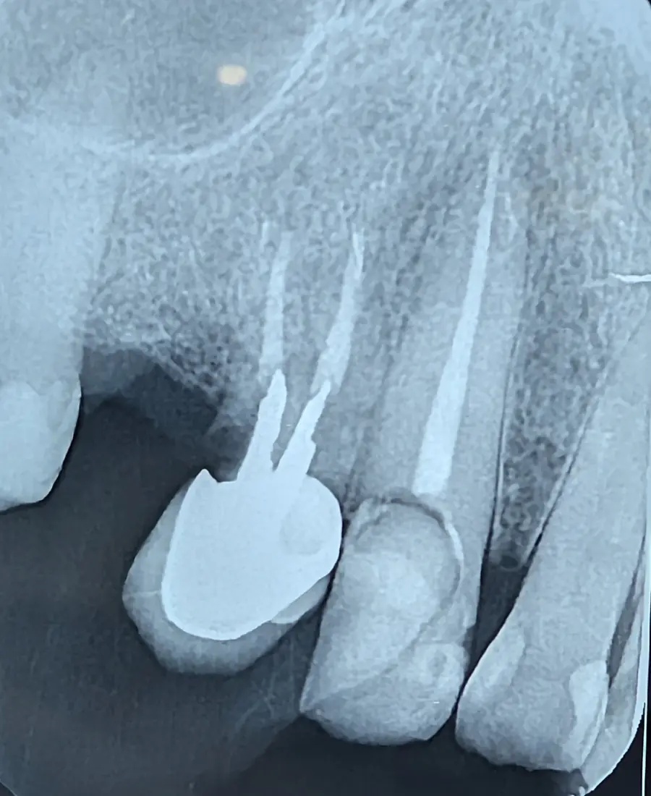

نسخه استخراجشده؛ ترجمه یا تأیید علمی انجام نشده است. وضعیت: captured
بیمار برای ایمپلنت نواحی ۴ و ۵ آمده است. دندان ۳ بهتازگی درمان ریشه شده و بیمار انتظار دارد روی همین دندان هم روکش گذاشته شود.

در ارزیابی رادیوگرافی و کلینیکی معلوم شد:
در ظاهر میشد دندان را نگه داشت، پستوکور گذاشت و روکش کرد. اما این فقط «نگاه به امروز» است. تو برای این دندان چه تصمیمی میگیری؟
در ارزیابی تیمی با متخصص لثه معلوم شد ایجاد فرول پالاتال:
نقطهی تصمیم این بود: آیندهی این دندان در طرح درمان بیمار چقدر ارزش دارد؟ بیمار همین حالا برای دو ایمپلنت سرمایهگذاری میکرد. اگر کانین نگه داشته میشد و بعدها شکست میخورد، بیمار دوباره هزینه، درمان و ریسک جدید را تحمل میکرد. زمانبندی درمانهای همجوار خودش یک متغیر تصمیم است، نه پسزمینه.
با توجه به موقعیت استراتژیک کانین، احتمال بالای شکست آینده و اینکه بیمار همین حالا در فاز ایمپلنتگذاری بود، بهترین تصمیم حذف دندان ۳ و طراحی ایمپلنتها در نواحی ۳ و ۵ بود. نتیجه: بیمار از شکست حتمی کانین نجات پیدا کرد، ریسک فانکشنال حذف شد و یک پلان پایدار با ایمپلنتهای ۳ و ۵ برایش ساخته شد.
طرح درمان خوب فقط عکس و کلینیک امروز نیست؛ آیندهی فانکشنال را هم باید دید. گاهی بهترین انتخاب، انصراف از درمانی است که در ظاهر ممکن است، اما در آینده هزینه، ریسک و شکست قطعی ایجاد میکند. جلوگیری از شکست قابل پیشبینی، خودش یک درمان است.